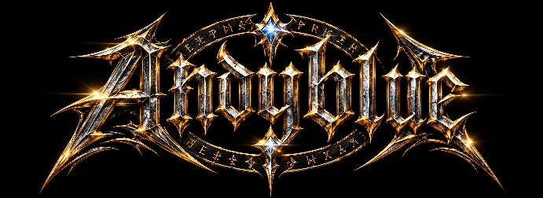

Power, emotion and personal stories
Heavy guitars, powerful melodies and stories of struggle, hope and the strength to move forward.

MUSIC
I Choose to Live
A personal story of resilience and the will to live.
Listen to the album on Spotify